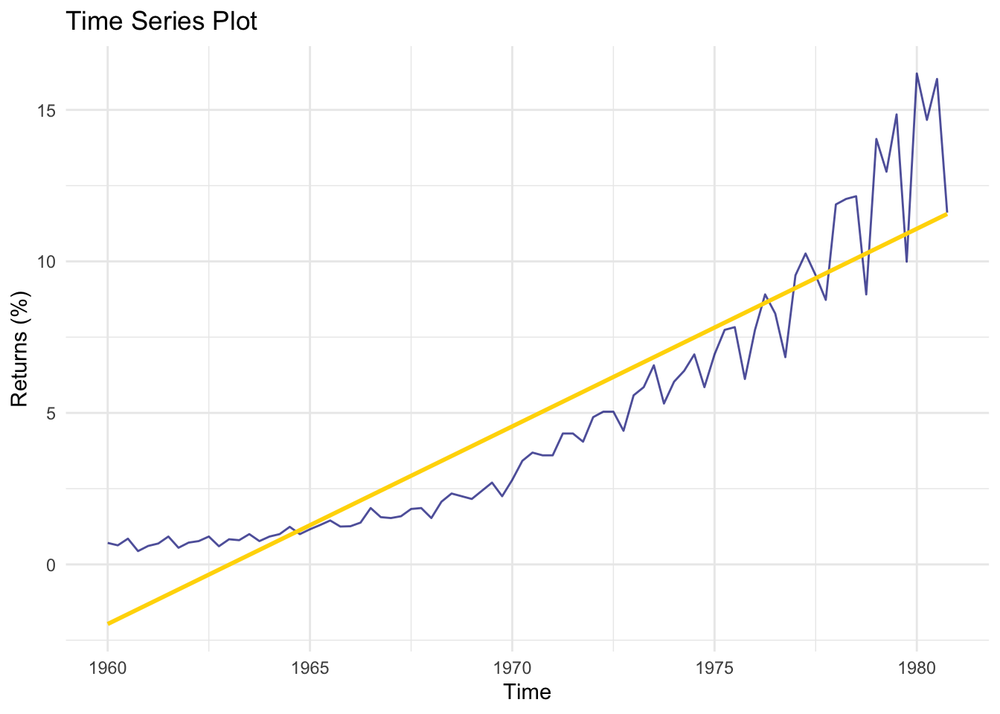

Bayesian Time Series
Alin Morariu
29/04/2020
1 A Note to the Reader
This document is a time series tutorial. The focus is not performing an in-depth and appropriate time series analysis but simply using Markov Chain Monte Carlo (MCMC) methods for the purpose of . As such, all things considering modeling checking and forecasting are omitted. All material below is to be viewed through a purely computational lens which shows how models are coded/structured in Stan and understanding the output.
2 Bayesian Framework
Unlike the frequentist approach where point estimates are computed for parameter values, the Bayesian framework allows us to specify a distribution for the parameter value the data. This distribution is referred to as the posterior distribution of the parameter and is a function of the data.
\[\begin{equation} \mathbb{P}(\theta | \text{data}) \propto \mathcal{L}(\text{data} | \theta) \cdot \mathbb{P}(\theta) \end{equation}\] The quantities above will be referred to as:Parameter estimates correspond to the mode of the posterior distribution and this distribution is precisely what Stan explores with it’s various MCMC algorithms.
3 Stan and it’s Samplers
Stan is a language used for (amongst other things) full Bayesian statistical inference with MCMC sampling. It implements two MCMC methods; Hamiltonian Monte Carlo (HMC) and No U-Turn Sampling (NUTS). This section provides a high level summary of both algorithms. The key thing to keep in mind is that in order to have a “good” estimate of the model parameters we need to fully explore the posterior density of the parameters. These algorithms add certain contraints to the basic randomly generated steps of a vanilla Metropolis-Hastings (this is what we mean by MCMC algorithm) which makes them more efficient in exploring “new” parts of the space.
The set up of any MCMC method is that we want to have an estimate for a parameter vector \(\theta\). Based on our data, we compute the unnormalized posterior distribution, \(\mathbb{P}(\theta | X)\), of the parameter vector. Now, we must sample from this distribution. MCMC work by creating a Markov chain which has the same distribution as posterior. Since this distribution will not always be known we take a second distribution \(f(x)\) such taht \(f(\theta) \propto k \mathbb{P}(\theta | X)\) where \(k\) is some constant. Now we initialize the algorithm at some point \(\theta_0\) then sample a potential next step \(\theta'\) from some proposed density \(g(\theta' | \theta_t)\) (note since we are taking samples of \(\theta\) over time we create a Markov chain). We typically take \(g\) to be a Gaussian distribution centered at \(x_t\) as to keep the proposed steps relatively close to our intial point. Once we have a proposal, we verify that this is a “good” step. To do so, we compute \(\alpha = \frac{f(\theta')}{f(\theta_t)} = \frac{\mathbb{P}(\theta' | X)}{\mathbb{P}(\theta_ | X)}\) and accept only if \(\alpha \geq u \sim U(0,1)\). We will always accept if the next step is more probable (i.e. in the right direction) since that ratio will be above 1. Manipulating this error is precisely what HMC and NUTS attempt to do by exploiting some additional information about the posterior (namely gradients).
3.1 Hamiltonian Monte Carlo
HMC differs from the standard version of Metropolis-Hastings by introducing an additional variable referred to as the . We will denote this with \(\rho\). Much like with everything else in the Bayesian world this will be specified by a probability distribution. \[\begin{align} \mathbb{P}(\rho, \theta) &= \mathbb{P}(\rho | \theta) \cdot \mathbb{P}(\theta) \\ \rho &\sim MVN (0, \text{diag}(\Sigma_\theta)^{-1}) \end{align}\] The covariance matrix \(\Sigma_\theta\) is computed during the warm up stage of the algorithm (think of this as a stage in the sampling where we go from no knowledge of the posterior to some knowledge of the posterior).
This auxiliary momentum is then used to compute the Hamiltonian of the posterior. The Hamiltonian is a matrix describing the level sets of the distribution in high dimensional space. Much like planets orbit in a set eliptical path, each level set of a distribution is a possible elipse for an object to move along and the collection of these level sets form a dynamical system. \[\begin{align} H(\rho, \theta) &= - \log\mathbb{P}(\rho, \theta) \\ &= - \log\mathbb{P}(\rho | \theta) - \log \mathbb{P}(\theta) \end{align}\] where we denote the of the system as \(T(\rho | \theta) = \log\mathbb{P}(\rho | \theta)\) and the as \(V(\theta) = \log\mathbb{P}(\theta)\). The proposal \(\theta'\) now turns into a 2 stage process.
The estimate is then computed by drawing a new sample of \(\rho\), taking a \(\frac{1}{2}\) step update in the momentum, a full step in the parameter value and another \(\frac{1}{2}\) step in the momentum before computing \(\alpha\). \[\begin{align} \rho^* &\leftarrow \rho - \frac{\epsilon}{2} \frac{dV}{d\theta} \\ \theta^* &\leftarrow \theta + \epsilon \text{diag}(\Sigma_\theta)^{-1} \rho* \\ \rho^* &\leftarrow \rho - \frac{\epsilon}{2} \frac{dV}{d\theta} \\ \Rightarrow &(\rho^*, \theta^*) \end{align}\] Where the pair \((\rho^*, \theta^*)\) is the new proposal. Now we apply the Metroplois step and get an acceptance probability of \(p_{\text{accept}} = \min{1 , \exp \{ H(p,\theta) - H(p^*, \theta^*) \} }\)
3.2 No U-Turn Sampler
One downfall of the HMC algorithm is that you may end up with a situation where you are going around in circles around the posterior and returning to where you started. This creates some inefficiencies that the NUTS aims fix this by taking steps in both the positive and negative directions as dictated by the differential system. It continues to take steps until the gradients change direction. Once those points are detected, an average is choosen as the proposal.
This algorithm is much more complex and is thus omitted from this discussion. If you’d like more details, this paper by Michael Betancourt will provide more details.
4 Stan Code Structure
The way we use Stan is by encoding a model in Stan code (a .stan file) then running it through R. Models are laid out in an almost heirarchical structure. First is a data chunk listing all of the variables which will be inputted. Next is a parameters section which we use for specifying the quantities we want to estimate. Lastly, we need a section to specify the structure of the model, namely the priors and likelihood functions.
4.1 Necessary Packages
This section is simply for loading the base R packages we will be using to perform our Bayesian Inference.
## PACKAGES ##
library(tidyverse) # data processing
library(rstan) # R version of Stan
library(parallel) # enable parallel computing
library(timeDate)
## OPTIONS ##
# Choose one of the below
options(mc.cores = 1) # all chains computed on 1 core
#options(mc.cores = parallel::detectCores()) # chains run in parallel
rstan_options(auto_write = TRUE)5 Time Series Models
Now that we have an understanding of how Stan computes the estimates, let’s write some Stan code. All of the models are assumed to have Gaussian noise components and will be fitted based on the JohnsonJohnson data set.
data("JohnsonJohnson")
JJ_data <- data_frame(time = time(JohnsonJohnson), returns = JohnsonJohnson)
head(JJ_data)## # A tibble: 6 x 2
## time returns
## <ts> <ts>
## 1 1960.00 0.71
## 2 1960.25 0.63
## 3 1960.50 0.85
## 4 1960.75 0.44
## 5 1961.00 0.61
## 6 1961.25 0.69p_JJ_ts <- JJ_data %>% ggplot(aes(x = time, y = returns)) +
geom_line(color = "navy", alpha = 0.7) +
geom_smooth(color = "gold", method = "lm", se = FALSE) +
labs(title = "Time Series Plot", x = "Time", y = "Returns (%)") +
theme_minimal()
p_JJ_ts
returns <- JohnsonJohnson5.1 Auto-regressive Model
Auto-regressive models of order p, denoted AR(p), take the form: \[\begin{align} y_t &= \phi_1 y_{t-1} + \ldots + \phi_p y_{t-p} + \epsilon_t \\ \epsilon_t &\sim N(0, \sigma^2) \end{align}\] The parameters we need to estimate are \((\phi_1, \ldots, \phi_p, \sigma)\). We begin with a simple AR(1) model before generalizing the Stan code to allow for the user to input the order of the model as part of the data.
5.2 AR(1)
The Stan code is as follows:
data {
int<lower=0> N; // length of TS
vector[N] returns; // name of the vector/column we feed in
}
parameters {
real phi_0; // estimate the mean
real phi_1; // estimate the first order parameter
real<lower=0> sigma; // estimate the std dev of the Gaussian noise
}
model {
// priors
phi_0 ~ normal(0,4);
phi_1 ~ normal(0,2);
returns[2:N] ~ normal(phi_0 + phi_1 * returns[1:(N-1)], sigma);
// note: improper/default priors are used here. We specify priors later
}
# Set up data like the data section of stan code
AR1_data <- list(N = length(returns),
returns = returns)
AR1_fit <- rstan::stan("Stan_files/AR1.stan",
data = AR1_data,
iter = 2000,
chains = 4,
refresh = 500)##
## SAMPLING FOR MODEL 'AR1' NOW (CHAIN 1).
## Chain 1:
## Chain 1: Gradient evaluation took 2.5e-05 seconds
## Chain 1: 1000 transitions using 10 leapfrog steps per transition would take 0.25 seconds.
## Chain 1: Adjust your expectations accordingly!
## Chain 1:
## Chain 1:
## Chain 1: Iteration: 1 / 2000 [ 0%] (Warmup)
## Chain 1: Iteration: 500 / 2000 [ 25%] (Warmup)
## Chain 1: Iteration: 1000 / 2000 [ 50%] (Warmup)
## Chain 1: Iteration: 1001 / 2000 [ 50%] (Sampling)
## Chain 1: Iteration: 1500 / 2000 [ 75%] (Sampling)
## Chain 1: Iteration: 2000 / 2000 [100%] (Sampling)
## Chain 1:
## Chain 1: Elapsed Time: 0.062708 seconds (Warm-up)
## Chain 1: 0.054304 seconds (Sampling)
## Chain 1: 0.117012 seconds (Total)
## Chain 1:
##
## SAMPLING FOR MODEL 'AR1' NOW (CHAIN 2).
## Chain 2:
## Chain 2: Gradient evaluation took 6e-06 seconds
## Chain 2: 1000 transitions using 10 leapfrog steps per transition would take 0.06 seconds.
## Chain 2: Adjust your expectations accordingly!
## Chain 2:
## Chain 2:
## Chain 2: Iteration: 1 / 2000 [ 0%] (Warmup)
## Chain 2: Iteration: 500 / 2000 [ 25%] (Warmup)
## Chain 2: Iteration: 1000 / 2000 [ 50%] (Warmup)
## Chain 2: Iteration: 1001 / 2000 [ 50%] (Sampling)
## Chain 2: Iteration: 1500 / 2000 [ 75%] (Sampling)
## Chain 2: Iteration: 2000 / 2000 [100%] (Sampling)
## Chain 2:
## Chain 2: Elapsed Time: 0.061356 seconds (Warm-up)
## Chain 2: 0.05047 seconds (Sampling)
## Chain 2: 0.111826 seconds (Total)
## Chain 2:
##
## SAMPLING FOR MODEL 'AR1' NOW (CHAIN 3).
## Chain 3:
## Chain 3: Gradient evaluation took 7e-06 seconds
## Chain 3: 1000 transitions using 10 leapfrog steps per transition would take 0.07 seconds.
## Chain 3: Adjust your expectations accordingly!
## Chain 3:
## Chain 3:
## Chain 3: Iteration: 1 / 2000 [ 0%] (Warmup)
## Chain 3: Iteration: 500 / 2000 [ 25%] (Warmup)
## Chain 3: Iteration: 1000 / 2000 [ 50%] (Warmup)
## Chain 3: Iteration: 1001 / 2000 [ 50%] (Sampling)
## Chain 3: Iteration: 1500 / 2000 [ 75%] (Sampling)
## Chain 3: Iteration: 2000 / 2000 [100%] (Sampling)
## Chain 3:
## Chain 3: Elapsed Time: 0.067595 seconds (Warm-up)
## Chain 3: 0.121271 seconds (Sampling)
## Chain 3: 0.188866 seconds (Total)
## Chain 3:
##
## SAMPLING FOR MODEL 'AR1' NOW (CHAIN 4).
## Chain 4:
## Chain 4: Gradient evaluation took 7e-06 seconds
## Chain 4: 1000 transitions using 10 leapfrog steps per transition would take 0.07 seconds.
## Chain 4: Adjust your expectations accordingly!
## Chain 4:
## Chain 4:
## Chain 4: Iteration: 1 / 2000 [ 0%] (Warmup)
## Chain 4: Iteration: 500 / 2000 [ 25%] (Warmup)
## Chain 4: Iteration: 1000 / 2000 [ 50%] (Warmup)
## Chain 4: Iteration: 1001 / 2000 [ 50%] (Sampling)
## Chain 4: Iteration: 1500 / 2000 [ 75%] (Sampling)
## Chain 4: Iteration: 2000 / 2000 [100%] (Sampling)
## Chain 4:
## Chain 4: Elapsed Time: 0.060555 seconds (Warm-up)
## Chain 4: 0.065954 seconds (Sampling)
## Chain 4: 0.126509 seconds (Total)
## Chain 4:# the model
AR1_fit## Inference for Stan model: AR1.
## 4 chains, each with iter=2000; warmup=1000; thin=1;
## post-warmup draws per chain=1000, total post-warmup draws=4000.
##
## mean se_mean sd 2.5% 25% 50% 75% 97.5% n_eff Rhat
## theta_0 0.34 0.01 0.24 -0.11 0.19 0.34 0.51 0.82 2076 1
## theta_1 0.95 0.00 0.04 0.88 0.93 0.95 0.98 1.03 2111 1
## sigma 1.45 0.00 0.12 1.24 1.36 1.44 1.52 1.70 2626 1
## lp__ -70.80 0.03 1.25 -73.92 -71.39 -70.49 -69.86 -69.35 1829 1
##
## Samples were drawn using NUTS(diag_e) at Sat Mar 27 21:58:08 2021.
## For each parameter, n_eff is a crude measure of effective sample size,
## and Rhat is the potential scale reduction factor on split chains (at
## convergence, Rhat=1).# posterior plots
stan_plot(AR1_fit,
point_est = "mean",
show_density = TRUE) +
labs(title = 'AR(1) Posterior Plots',
subtitle = 'of Johnson&Johnson Dataset') 
5.3 AR(p)
The Stan code is as follows:
data {
int<lower=0> P; // order of the model
int<lower=0> N; // length of TS
vector[N] returns; // name of TS vector
}
parameters {
real mu; // mean of TS
real phi[P]; // real valued theta vector of length p
real <lower = 0> sigma; // std dev of Gaussian noise
}
model {
// specify priors
mu ~ normal(0,4);
phi ~ normal(0, 2);
sigma ~ exponential(2);
// use for loops to set up the likelihood
for (n in (P+1):N){
real average = mu;
for (p in 1:P)
average += phi[p] * returns[n - p];
returns[n] ~ normal(average, sigma); // mean is the combo of previous P steps in the process
}
}
# Set up data like the data section of stan code
model_order <- 3
ARp_data <- list(P = model_order, # order of AR model
N = length(returns), # length of TS
returns = returns # the data
)
ARp_fit <- rstan::stan("Stan_files/ARp.stan",
data = ARp_data,
iter = 2000,
chains = 2,
refresh = 0)# the model
ARp_fit## Inference for Stan model: ARp.
## 2 chains, each with iter=2000; warmup=1000; thin=1;
## post-warmup draws per chain=1000, total post-warmup draws=2000.
##
## mean se_mean sd 2.5% 25% 50% 75% 97.5% n_eff Rhat
## mu 0.20 0.00 0.20 -0.19 0.06 0.20 0.33 0.57 1652 1.00
## theta[1] 0.26 0.00 0.12 0.02 0.18 0.26 0.33 0.50 1173 1.00
## theta[2] 0.56 0.00 0.11 0.34 0.49 0.56 0.63 0.78 1250 1.00
## theta[3] 0.21 0.00 0.12 -0.03 0.13 0.21 0.29 0.45 1172 1.00
## sigma 1.17 0.00 0.09 1.00 1.10 1.16 1.22 1.37 1429 1.00
## lp__ -55.96 0.06 1.67 -60.18 -56.73 -55.62 -54.79 -53.86 793 1.01
##
## Samples were drawn using NUTS(diag_e) at Sat Mar 27 21:58:11 2021.
## For each parameter, n_eff is a crude measure of effective sample size,
## and Rhat is the potential scale reduction factor on split chains (at
## convergence, Rhat=1).# posterior plots
stan_plot(ARp_fit,
point_est = "mean",
show_density = TRUE) +
labs(title = 'AR(3) Posterior Plots',
subtitle = 'of Johnson&Johnson Dataset')  ## Autoregressive Conditional Heteroskedasticty Model This section is limited to ARCH(1) models but this can be extended to an ARCH(p) model with a for loop on the variance parameter in the likelihood. The ARCH(p) model is set up as follows:
## Autoregressive Conditional Heteroskedasticty Model This section is limited to ARCH(1) models but this can be extended to an ARCH(p) model with a for loop on the variance parameter in the likelihood. The ARCH(p) model is set up as follows:
\[\begin{align} r_t &= \mu + \omega_t \\ \omega_t &= \sigma_t \epsilon_t \\ \sigma_t^2 &= \alpha_0 + \alpha_1 a_{t-1}^2 \\ \epsilon_t &\sim N(0, \sigma^2) \end{align}\]
The Stan code is as follows.
data{
int<lower = 0> N; // length of time series
vector[N] returns; // the time series
}
parameters{
real mu; // a constant - average return
real<lower = 0> alpha_0; // parameter of ARCH portion - intercept of noise
real<lower = 0, upper = 1> alpha_1; // another parameter of ARCH - slope of noise
real<lower = 0> sigma;
}
model{
// priors
mu ~ normal(0,2);
alpha_0 ~ normal(0, 2);
alpha_1 ~ normal(0,1);
sigma ~ normal(0,2);
// likelihood - can be vectorized instead of a loop
for(n in 2:N)
returns[n] ~ normal(mu, sqrt(alpha_0 + alpha_1 * sigma * pow(returns[n-1] - mu,2)));
}
# Set up data like the data section of stan code
ARCH1_data <- list(N = length(returns),
returns = returns)
ARCH1_fit <- rstan::stan("Stan_files/ARCH1.stan",
data = ARCH1_data,
iter = 2000,
chains = 2,
refresh = 0,
control = list(adapt_delta = 0.99))# the model
ARCH1_fit## Inference for Stan model: ARCH1.
## 2 chains, each with iter=2000; warmup=1000; thin=1;
## post-warmup draws per chain=1000, total post-warmup draws=2000.
##
## mean se_mean sd 2.5% 25% 50% 75% 97.5% n_eff Rhat
## mu 1.03 0.01 0.22 0.75 0.85 0.99 1.17 1.55 483 1.01
## alpha_0 0.07 0.00 0.04 0.02 0.04 0.06 0.09 0.18 805 1.01
## alpha_1 0.62 0.01 0.21 0.25 0.46 0.62 0.78 0.98 484 1.00
## sigma 2.12 0.03 0.88 1.02 1.48 1.90 2.51 4.39 670 1.00
## lp__ -100.58 0.07 1.48 -104.29 -101.35 -100.24 -99.49 -98.60 444 1.01
##
## Samples were drawn using NUTS(diag_e) at Sat Mar 27 21:58:14 2021.
## For each parameter, n_eff is a crude measure of effective sample size,
## and Rhat is the potential scale reduction factor on split chains (at
## convergence, Rhat=1).# posterior plots
stan_plot(ARCH1_fit,
point_est = "mean",
show_density = TRUE) +
labs(title = 'ARCH(1) Posterior Plots',
subtitle = 'of Johnson&Johnson Dataset') 
5.4 Moving Average Model
Moving average models of order q, denoted MA(q), take the form: \[\begin{align} y_t &= \theta_1 y\epsilon_{t-1} + \ldots + \theta_p epsilon_{t-q} + \epsilon_t \\ \epsilon_t &\sim N(0, \sigma^2) \end{align}\] The parameters we need to estimate are \((\theta_1, \ldots, \theta_p, \sigma)\). The Stan code is as follows.
data {
int<lower = 0> Q; // order of model
int<lower = 1> T; // length of time series
vector[T] returns; // time series vector
}
parameters {
real mu; // mean of the time series
real theta[Q]; // the coefficients
real<lower = 0> sigma; // noise scale parameter
}
model {
// useful parameters
vector[T] previous_steps; // prediction at time t (the moving average)
vector[T] error; // noise at each step
// priors
mu ~ cauchy(0, 2.5);
theta ~ normal(0, 2);
sigma ~ exponential(2.01);
// likelihood
for(t in 1:T){
previous_steps[t] = mu;
error[t] = returns[t] - mu;
for(q in 1:min(t-1, Q)){
previous_steps[t] = previous_steps[t] + theta[q] * error[t-q];
error[t] = error[t] - theta[q] * error[t-q];
}
}
returns ~ normal(previous_steps, sigma);
}
# Set up data like the data section of stan code
model_order = 4
MAq_data <- list(Q = model_order, # order of AR model
T = length(returns), # length of TS
returns = returns # the data
)
MAq_fit <- rstan::stan("Stan_files/MAqV2.stan",
data = MAq_data,
iter = 2000,
chains = 2,
refresh = 0,
pars = c("mu", "theta","sigma"))# the model
MAq_fit## Inference for Stan model: MAqV2.
## 2 chains, each with iter=2000; warmup=1000; thin=1;
## post-warmup draws per chain=1000, total post-warmup draws=2000.
##
## mean se_mean sd 2.5% 25% 50% 75% 97.5% n_eff Rhat
## mu 1.92 1.24 1.33 0.73 0.74 0.94 3.18 4.42 1 2.48
## theta[1] 0.59 0.26 0.26 0.29 0.35 0.41 0.84 1.02 1 3.74
## theta[2] 0.36 0.56 0.56 -0.24 -0.21 0.20 0.92 1.09 1 8.82
## theta[3] -0.05 0.83 0.83 -0.88 -0.88 -0.26 0.77 1.02 1 10.97
## theta[4] -0.19 1.05 1.05 -1.26 -1.24 -0.52 0.87 1.05 1 15.43
## sigma 4.11 2.59 2.59 1.33 1.51 4.32 6.70 6.81 1 32.74
## lp__ -141.11 59.90 59.93 -202.93 -201.08 -145.80 -80.86 -78.59 1 42.04
##
## Samples were drawn using NUTS(diag_e) at Sat Mar 27 21:58:45 2021.
## For each parameter, n_eff is a crude measure of effective sample size,
## and Rhat is the potential scale reduction factor on split chains (at
## convergence, Rhat=1).# posterior plots
stan_plot(MAq_fit,
point_est = "mean",
show_density = TRUE) +
labs(title = 'MA(3) Posterior Plots',
subtitle = 'of Johnson&Johnson Dataset') 
The posterior plots look like houses from a Dr. Seuss book which means that this is a multimodal posterior distribution.
5.5 Auto-regressive Moving Average Model
Auto-regressuve Moving average models of order (p,q), denoted ARMA(p,q), take the form: \[\begin{align} y_t &= \phi_1 y_{t-1} + \ldots + \phi_p y_{t-p} + \theta_1 y\epsilon_{t-1} + \ldots + \theta_p epsilon_{t-q} + \epsilon_t \\ \epsilon_t &\sim N(0, \sigma^2) \end{align}\]
The parameters we need to estimate are \((\phi_1, \ldots, \phi_p, \theta_1, \ldots, \theta_p, \sigma)\). The Stan code is as follows.
data {
int<lower = 0> P; // AR Order
int<lower = 0> Q; // MA Order
int<lower=1> T; // num observations
real y[T]; // observed outputs
}
parameters {
real mu; // mean coeff
vector[P] phi; // autoregression coeff
vector[Q] theta; // moving avg coeff
real<lower=0> sigma; // noise scale
}
model {
vector[T] nu; // prediction for time t
vector[T] err; // error for time t
// initialization
for(t in 1:max(P,Q)){
nu[t] = mu + phi[t] * mu; // assume err[0] == 0
err[t] = y[t] - nu[t];
}
for (t in (max(P,Q)+1):T) {
nu[t] = mu;
//
// AR component
for(p in 1:P){
nu[t] = nu[t] + phi[p] * y[t-p];
}
// MA component
for(q in 1:Q){
nu[t] = nu[t] + theta[q] * y[t-q];
}
//
// error computation
err[t] = y[t] - nu[t];
}
// priors
mu ~ normal(0, 10);
phi ~ normal(0, 2);
theta ~ normal(0, 2);
sigma ~ cauchy(0, 5);
// likelihood
err ~ normal(0, sigma);
}
# Set up data like the data section of stan code
AR_order = 2
MA_order = 2
ARMApq_data <- list(P = AR_order,
Q = MA_order,
T = length(returns),
y = returns)
ARMApq_fit <- rstan::stan('Stan_files/ARMAV2.stan',
data = ARMApq_data,
iter = 4000,
refresh = 0,
chains =4,
thin = 1,
algorithm = 'HMC')# the model
ARMApq_fit## Inference for Stan model: ARMAV2.
## 4 chains, each with iter=4000; warmup=2000; thin=1;
## post-warmup draws per chain=2000, total post-warmup draws=8000.
##
## mean se_mean sd 2.5% 25% 50% 75% 97.5% n_eff Rhat
## mu 0.22 0.00 0.19 -0.16 0.09 0.22 0.34 0.59 31225 1.00
## phi[1] 0.34 0.06 1.29 -2.23 -0.55 0.35 1.20 2.85 442 1.01
## phi[2] 0.38 0.05 1.34 -2.28 -0.51 0.37 1.25 3.02 659 1.01
## theta[1] 0.04 0.06 1.29 -2.46 -0.83 0.03 0.92 2.61 441 1.01
## theta[2] 0.26 0.05 1.34 -2.38 -0.60 0.25 1.15 2.93 676 1.01
## sigma 1.18 0.00 0.09 1.00 1.11 1.17 1.24 1.37 524 1.01
## lp__ -56.09 0.05 1.72 -60.19 -56.96 -55.76 -54.83 -53.71 1208 1.00
##
## Samples were drawn using HMC(diag_e) at Sat Mar 27 22:01:54 2021.
## For each parameter, n_eff is a crude measure of effective sample size,
## and Rhat is the potential scale reduction factor on split chains (at
## convergence, Rhat=1).# posterior plots
stan_plot(ARMApq_fit,
point_est = "mean",
show_density = TRUE) +
labs(title = 'ARMA(2,2) Posterior Plots',
subtitle = 'of Johnson&Johnson Dataset') 
6 Additional Stan Plots
Beyond the \texttt{stan_plot} objects above, there are several other plots provided for posterior checks. This section is dedicated to showing those plots.
library(gridExtra)
# All plots will be done on the ARMA(2,2) model
# Posterior plots - these all tell us the same thing
stan_hist(ARMApq_fit,
bins = 20) +
labs(title = "Posterior Histograms")
stan_dens(ARMApq_fit,
separate_chains = TRUE,
alpha = 0.3)
# Let's look at the chains themselves
stan_trace(ARMApq_fit,
alpha = 0.7) +
labs(title ='Trace Plots of Markov Chains') +
scale_color_brewer(type = "div") +
theme(strip.background = ggplot2::element_rect(fill = "maroon"),
strip.text = ggplot2::element_text(size = 13, color = "black")) 
# Look at individual parameter's chains
stan_trace(ARMApq_fit,
alpha = 0.7,
pars = c("theta"), # add name of parameter vector to the vector
inc_warmup = FALSE) +
labs(title ='Trace Plots of Markov Chains',
subtitle = 'MA Components') +
scale_color_brewer(type = "div") +
theme(strip.background = ggplot2::element_rect(fill = "maroon"),
plot.title = element_text(color = 'black'),
strip.text = ggplot2::element_text(size = 12, color = "white"),
plot.background = element_rect(fill = 'white'))
# Lastly we have the scatterplots. These will show the joint posteriors of
# 2 named parameters
stan_scat(ARMApq_fit,
pars = c("mu", "phi[2]"),
color = "blue",
size = 2,
alpha = 0.3) +
labs(title = "Posterior Joint Density Plot",
subtitle = 'Time series mean vs 1st order AR Component') +
theme(panel.background = ggplot2::element_rect(fill = "black")) +
geom_density2d(color = 'skyblue')
stan_scat(ARMApq_fit,
pars = c("theta[1]", "theta[2]"),
color = "blue",
size = 2,
alpha = 0.3) +
labs(title = "Posterior Joint Density Plot",
subtitle = '1st order MA Component vs 2nd order MA Component') +
theme(panel.background = ggplot2::element_rect(fill = "black")) +
geom_density2d(color = 'skyblue')
7 Acknowledgments
The material for this page was sourced from the Stan User’s Guide.